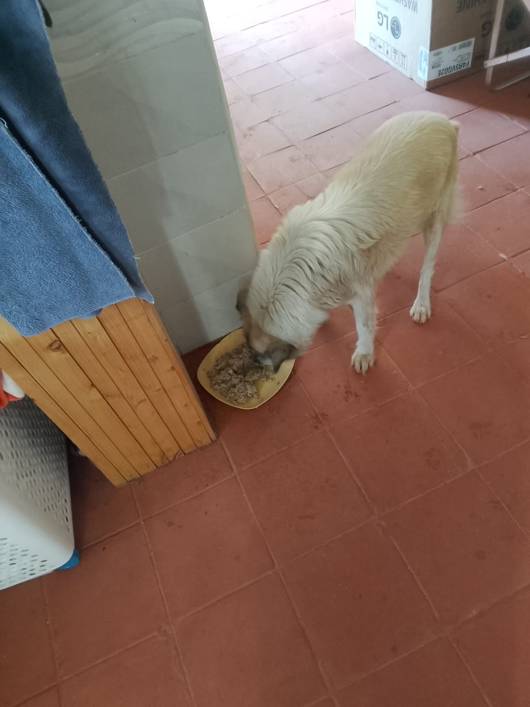

Mucheru World of Golf
Field engineering operations across Mucheru World of Golf on Wednesday, 28th October 2026 achieved significant advances in irrigation automation commissioning, teebox earthworks, rootzone sand intake, drainage canal excavations, dam liner repairs, and course grounds clearing:
Golf Course Operational Highlights
Plumbing teams advanced automated electric solenoid and pop-up sprinkler installations, confirming active pressurized spray on Green 2 and backfilling lateral teebox trenches after pipe placement. Clean river sand was applied on Green 18 and a fresh lorry load delivered to Green 10. Drainage crews started digging the new trench at Green 6 and shaped the main gravity canal. Red soil was finished on Teebox 6 and applied on Teebox 9. Dam 2 dewatering finished as liner welding commenced, Dam 1 liner repairs started, Dam 3 water inlet flowed, and course trash was collected with the tractor and burned.
- Hunter Pop-Up Sprinklers Tested on Green 2 & System Assembly: Plumbers verified active water spray coverage on Green 2, while continuing the installation of automated electric solenoids and pop-up sprinkler assemblies across course lines.
- Teebox Lateral Trench Backfilling Following Pipe & Sprinkler Placement: Site crews installed lateral HDPE pipes fitted with pop-up sprinklers across championship teeboxes, with labor teams promptly backfilling and compacting the trenches.
- Rootzone River Sand Spreading on Green 18 & Green 10 Intake: Ground teams spread and raked clean river sand across the foundation profile of Green 18, while a commercial tipper lorry delivered a fresh load of river sand to Green 10.
- Green 6 Drainage Trench Excavation & Main Canal Gradient Shaping: Manual excavation commenced on the newly measured replacement drainage trench at Green 6, alongside ongoing invert leveling of the deep main gravity drainage canal.
- Teebox 6 Red Soil Completion & Teebox 9 Surface Layering: Earthmoving crews completed red soil spreading and surface leveling on Teebox 6, while applying, shaping, and leveling fresh red topsoil across the platform of Teebox 9.
- Reservoir Liner Repairs at Dam 1, Dam 2 Welding & Dam 3 Inflow: Dewatering at Dam 2 concluded to enable geomembrane liner welding, repair work began on Dam 1 polythene liner connections, and Dam 3 maintained steady water intake.
- Course Waste Clearance & Controlled Burning via Farm Tractor: Maintenance crews gathered discarded liner offcuts, packaging cartons, and site trash across the course using the farm tractor and trailer for controlled burning in designated disposal pits.
18-hole putting green status audit showing the latest work completed and current condition for each green as of October 28, 2026:
| Green | Current Technical & Agronomic State | Milestone Status |
|---|---|---|
| Green 1 | Pop-up sprinklers confirmed functional and operational spray coverage verified (Oct 27). | Pop-Ups Functional |
| Green 2 Today | Pop-up sprinklers operational with pressurized spray coverage actively watering green (Oct 28). | Pop-Ups Functional |
| Green 3 | Electric solenoid valve installed on lateral line; river sand hauled to Green 13 (Oct 26). | Solenoid Installed |
| Green 4 | Pop-up sprinklers confirmed functional and operational spray coverage verified (Oct 27). | Pop-Ups Functional |
| Green 5 | Established mature championship putting green turfgrass watered with pop-up sprinklers (Oct 24). | Turf Irrigated |
| Green 6 Today | Excavation commenced on the newly measured replacement drainage trench along perimeter (Oct 28). | Drainage Trench Dug |
| Green 7 | HDPE irrigation supply trench cutting through Teebox 6 to Green 7 backfilled and covered (Oct 27). | Pipe Trench Covered |
| Green 8 | Electric solenoid valve installation and lateral pipe fitting completed on green (Oct 26). | Solenoid Installed |
| Green 9 Today | Main drainage trench leveling and shaping for positive gravity water flow ongoing (Oct 28). | Drainage Shaping Ongoing |
| Green 10 Today | One lorry of clean river sand delivered and stockpiled for rootzone construction (Oct 28). | River Sand Delivered |
| Green 11 | Pop-up sprinklers confirmed functional and operational spray coverage verified (Oct 27). | Pop-Ups Functional |
| Green 12 | Pop-up sprinklers confirmed functional and operational spray coverage verified (Oct 27). | Pop-Ups Functional |
| Green 13 | Pop-up sprinklers confirmed functional and operational spray coverage verified (Oct 27). | Pop-Ups Functional |
| Green 14 | Saddle clamps installed on HDPE pop-up sprinkler pipes and perimeter trenches backfilled (Oct 23). | Saddle Clamps & Covered |
| Green 15 | Saddle clamps installed on HDPE pop-up sprinkler pipes and perimeter trenches backfilled (Oct 22). | Saddle Clamps & Covered |
| Green 16 | Electric solenoid valve installed on lateral line; HDPE sprinkler trenches backfilled (Oct 24). | Solenoid Installed |
| Green 17 | Electric solenoid valve installed on lateral line; HDPE sprinkler trenches backfilled (Oct 24). | Solenoid Installed |
| Green 18 Today | River sand spread and leveled across putting green rootzone layer over sub-base (Oct 28). | River Sand Applied |
18-hole championship teebox status audit tracking launch platform shaping, red soil leveling, and irrigation pipe installations as of October 28, 2026:
| Teebox | Current Technical & Earthwork State | Platform Status |
|---|---|---|
| Tee 1 | Irrigation pipe trenches excavated across platform along marked survey lines (Oct 26). | Pipe Trenches Dug |
| Tee 2 | Red soil applied halfway across platform; lateral pipe trenches backfilled (Oct 27). | Red Soil Halfway |
| Tee 3 | Red soil applied, spread, and leveled across platform; lateral pipe trenches covered (Oct 27). | Red Soil Leveled |
| Tee 4 | Irrigation pipe trenches excavated across platform along marked survey lines (Oct 26). | Pipe Trenches Dug |
| Tee 5 | Red soil spread and leveled across platform; lateral pipe trenches backfilled (Oct 27). | Red Soil Leveled |
| Tee 6 Today | Red soil application, spreading, and platform surface leveling completed (Oct 28). | Red Soil Leveled |
| Tee 7 | Irrigation pipe trenches excavated across platform along marked survey lines (Oct 26). | Pipe Trenches Dug |
| Tee 8 | Red soil applied across platform; lateral irrigation pipe trenches excavated (Oct 26). | Red Soil & Trenches Dug |
| Tee 9 Today | Red soil applied, spread, and leveled across platform surface (Oct 28). | Red Soil Leveled |
| Tee 10 | Irrigation pipe trenches excavated across platform along marked survey lines (Oct 26). | Pipe Trenches Dug |
| Tee 11 | Electric solenoid valve installed on lateral irrigation supply line (Oct 27). | Solenoid Installed |
| Tee 12 | Electric solenoid valve installed on lateral irrigation supply line (Oct 27). | Solenoid Installed |
| Tee 13 | Electric solenoid valve installed on lateral irrigation supply line (Oct 27). | Solenoid Installed |
| Tee 14 | Irrigation pipe trenches excavated across platform along marked survey lines (Oct 26). | Pipe Trenches Dug |
| Tee 15 | Irrigation pipe trenches excavated across platform along marked survey lines (Oct 26). | Pipe Trenches Dug |
| Tee 16 | Red soil applied, spread, and leveled; lateral irrigation pipe trenches excavated (Oct 26). | Red Soil & Trenches Dug |
| Tee 17 | Irrigation pipe trenches excavated across platform along marked survey lines (Oct 26). | Pipe Trenches Dug |
| Tee 18 | Irrigation pipe trenches excavated across platform along marked survey lines (Oct 26). | Pipe Trenches Dug |
Operations Agronomy & Engineering Synthesis
Course Agronomy & Earthwork Milestones: River sand applied, spread, and leveled on Green 18 rootzone; 1 tipper lorry load of river sand delivered to Green 10; red topsoil spreading and platform leveling completed on Teebox 6; red soil applied and leveled on Teebox 9; excavation commenced on the new perimeter drainage trench at Green 6.
Hydraulic & Irrigation Infrastructure: Pop-up sprinklers verified functional with pressurized spray on Green 2; ongoing installation of automated electric solenoids and pop-up sprinklers; lateral trenches backfilled on teeboxes following HDPE pipe and sprinkler installation; main drainage trench leveling ongoing for gravity flow; Dam 2 dewatered with liner welding commencing; Dam 1 polythene liner repair underway; Dam 3 continuous water intake.
Field video recording documenting Wednesday, 28th October 2026 operations at Mucheru World of Golf, showcasing pop-up sprinkler installations and functional tests, solenoid setups, teebox red soil earthworks, river sand application, drainage trench excavations, dam liner repairs, and course maintenance:
Comprehensive field video capturing Wednesday, 28th October 2026 operations at Mucheru World of Golf: ongoing installation of automated electric solenoids and pop-up sprinklers; functional irrigation spray testing on Green 2; delivery of 1 tipper lorry of clean river sand to Green 10; application and spreading of river sand on Green 18; excavation of the newly measured drainage trench for Green 6; spreading and leveling of red soil on Teebox 9 and completing Teebox 6; backfilling of lateral teebox trenches after installing HDPE pipes with pop-up sprinklers; continued leveling and shaping of the main drainage trench for gravity flow; completion of water dewatering in Dam 2 and commencement of geomembrane liner welding; commencement of polythene liner connection repairs at Dam 1; active water intake into Dam 3; and estate-wide collection and controlled burning of course trash using the farm tractor.
Sequential photographic field documentation showing pop-up sprinkler operation, sprinkler installations and trench backfilling, river sand spreading, drainage trench excavations, teebox red soil leveling, dam liner repairs, water intake, and course waste clearing:

Green 2 — Functional Pop-Up Sprinkler Operational Test
Drone aerial capture showing Green 2 with a Hunter pop-up sprinkler pressurized and discharging uniform water spray across the sand-capped green and surrounding red soil collar.

Teebox Irrigation — Fitting Pop-Up Sprinkler Riser in Trench
Technician in pink cap kneeling in the excavated teebox trench assembling an orange sprinkler riser on the black HDPE line, with crew members standing by along the red soil platform.

Teebox Lateral Line — Installed Sprinkler Riser & End Cap
Longitudinal trench cut through the red soil teebox bed featuring black HDPE pipe fitted with a blue compression end cap in the foreground and an orange sprinkler riser ready for backfill.

Teebox Platform — Trench Backfilling & Surface Leveling
Labor crew using hoes and shovels backfilling excavated lateral pipe trenches and leveling red soil across the elevated teebox platform bordered by boundary fence posts.

Aerial Perspective — River Sand Application on Green 18
Overhead drone view showing Green 18 with neat mounds of river sand staged across the pumice sub-base bed, workers wheeling in sand, and Dam 3 water reservoir visible behind the green.

Green 18 — Sand Haulage & Drainage Line Fitting
Laborers shoveling river sand into wheelbarrows from a stockpile while a plumber applies PVC cement along an orange drainage trench leading to the Green 18 rootzone staging area.

Green 18 — Rootzone Profile Layers & Sand Mounds
Ground-level perspective displaying the distinct construction layers on Green 18: red soil collar, grey pumice aggregate sub-base with pickaxe, staged sand mounds, and leveled sand beyond.

Aerial Perspective — Newly Dug Drainage Trench at Green 6
High-angle drone view capturing Green 6 (sand rootzone with red soil collar) and the newly excavated right-angled drainage trench contouring around trees towards the dam embankment.

Green 6 — Perimeter Drainage Trench Excavation
Ground view of the newly dug drainage trench showing pooled water in the invert, with a worker in blue shirt excavating along the string line parallel to the black dam geomembrane slope.

Main Drainage Canal — Invert Shaping for Gravity Flow
Six laborers inside the deep main drainage canal using shovels to grade the invert slope for unobstructed gravity flow beneath a cross-trench HDPE irrigation pipe line.

Aerial Perspective — Teebox 6 Red Soil Completion
Drone aerial capture displaying L-shaped Teebox 6 with red soil fully applied and leveled across the platform, pipe trenches cut through, and Dam 2 basin visible in the upper background.

Aerial Perspective — Teebox 9 Red Soil Layering
Overhead drone view of rectangular Teebox 9 showing the central backfilled trench ridge bordered by two wide swaths of red topsoil, with a red soil stockpile staged in the foreground.

Teebox 9 — Red Soil Spreading & Platform Leveling
Ground-level longitudinal view of Teebox 9 showing the lighter backfilled central pipe trench flanked by spreading beds of rich red topsoil across the rectangular tee box surface.

Aerial Perspective — Dam 2 Liner Connection Welding
Overhead drone view capturing Dam 2 dewatered with a thin silt film on the floor, four technical workers welding liner seam connections in the center, and crew positioned along the anchor trench.

Aerial Perspective — Dam 1 Perimeter Liner Edge Works
Drone capture showing five laborers with shovels actively excavating the top anchor trench along the curved embankment of Dam 1 to untuck liner edges for connection repairs.

Dam 1 — Untucking Liner Edges for Connection Repairs
Ground perspective showing a laborer in blue beanie shoveling back overburden along the Dam 1 anchor trench, exposing the brown geotextile underlay and freeing the black liner edge.

Dam 3 Reservoir — Continuous Water Inlet Discharge
Ground-level view of Dam 3 showcasing the curved canal reservoir filled with clean greenish water retention, with the black geomembrane embankment and a cyclist visible across the far bank.

Site Waste Clearance — Tractor Trailer Waste Loading
Worker inside the red farm tractor trailer loading discarded liner cutoffs, Hunter sprinkler cartons, orange PVC offcuts, and packaging sacks collected across the golf course grounds.

Course Maintenance — Staging Site Waste for Disposal
Green tractor and red trailer staged on the open fairway after offloading a large pile of site trash, black liner scraps, cardboard boxes, and PVC offcuts prior to controlled burning.

Course Cleanliness — Controlled Burning of Packaging Waste
Controlled burning of discarded construction materials and packaging waste with active flames in an open clearing area, with dairy cattle visible grazing behind the perimeter paddock fence.
Chaka Farms
Farm and estate maintenance operations at Chaka Farms on Wednesday, 28th October 2026 maintained balanced dairy production reconciliation, canine behavioral training routines, kennel sanitation, and compound grounds upkeep under coordinated supervision:
Farm Operational Highlights
Dairy production achieved a 9.0 Litres gross harvest (6.0L morning + 3.0L evening), with 8.0 Litres dispatched for commercial sales (5.0L morning + 3.0L evening) and 1.0 Litre distributed for routine internal farm allocations (0.5L Gladys staff ration + 0.5L Maasai), achieving 100% quantitative accounting reconciliation strictly in Litres with zero discrepancy. Willy directed morning canine kennel sanitation, "paw" command obedience training, off-leash pack exercise walking, disciplined kennel manners conditioning, and mechanical trimming of compound lawn grass. Margaret and Monica performed compound groundskeeping, collecting and bagging trimmed lawn grass with rakes and burlap sacks.
- 100% Reconciled Dairy Harvest in Litres: Morning and evening milking yielded 9.0 Litres gross harvest, completely accounted for by 8.0 Litres dispatched for commercial sales and 1.0 Litre in routine farm allocations with zero discrepancy.
- Quantitative Commercial Dispatch Ground Truth: Commercial sales absorbed 5.0 Litres from the morning harvest and 3.0 Litres from the evening milking, leaving a zero-variance balance sheet.
- Morning Canine Sanitation & Stall Hygiene: Willy conducted comprehensive washing, scrubbing, and sanitizing of kennel stalls, ensuring superior veterinary hygiene and clean bedding.
- Morning Paw Command Conditioning & Pack Exercise: Dogs completed individual obedience training reinforcing the "paw" command, followed by an energetic off-leash exercise walk across open farm corridors.
- Disciplined Kennel Manners Behavioral Routine: Handlers reinforced doorway boundary control, conditioning canines to sit patiently at open stall thresholds and enter/exit strictly upon command.
- Compound Lawn Grass Trimming & Sward Upkeep: Willy operated grass trimming equipment to cut overgrown compound lawn grass, maintaining clean turf height around the farm structures.
- Grounds Cleanliness & Trimmed Grass Bagging: Margaret and Monica raked up trimmed lawn clippings across the estate grounds, packing the grass into burlap sacks for compound cleanliness.
Official milking production and distribution reconciliation for Wednesday, 28th October 2026, accounting for all commercial sales and on-farm allocations:
| Category / Transaction | Morning Session | Evening Session | Daily Total |
|---|---|---|---|
| Gross Milk Harvested | 6.0 Litres | 3.0 Litres | 9.0 Litres |
| Commercial Milk Sales (Dispatched) | 5.0 Litres | 3.0 Litres | 8.0 Litres |
| Internal Farm Allocation — Gladys (Staff) | 0.5 Litres | — | 0.5 Litres |
| Internal Farm Allocation — Maasai | 0.5 Litres | — | 0.5 Litres |
| Internal Farm Allocation — Goat Kids (Weaned) | 0.0 Litres | 0.0 Litres | 0.0 Litres |
| Total Volume Accounted For | 6.0 Litres | 3.0 Litres | 9.0 Litres (100% Reconciled) |
Dairy Accounting & Farm Reconciliation Note
Total gross milk harvested of 9.0 Litres (6.0L morning + 3.0L evening) is 100% accounted for by 8.0 Litres dispatched for commercial sales (5.0L morning sale + 3.0L evening sale) and 1.0 Litre in routine farm allocations (0.5L Gladys + 0.5L Maasai). In accordance with reporting rules, milk volumes are recorded strictly in Litres (never kilograms), and Maasai is designated strictly as Maasai with zero discrepancy. All yields reconcile perfectly with zero variance.
Daily behavioral conditioning routines, kennel hygiene maintenance, canine exercise sessions, and estate compound groundskeeping conducted on Wednesday, 28th October 2026:
- Morning Kennel Hygiene & Sanitization: Willy oversaw thorough morning kennel washing, deep stall scrubbing, and feeding bowl sanitation, preserving high hygiene standards.
- Morning Paw Command Training: Dogs participated in individual obedience drills focused on reinforcing the "paw" command with positive verbal cues and praise.
- Morning Off-Leash Pack Exercise Walking: Willy conducted an energetic off-leash walking and exercise session across open farm corridors, encouraging natural running and pack agility.
- Disciplined Kennel Manners Conditioning: Handlers reinforced disciplined kennel manners, conditioning canines to sit patiently at open stall thresholds until given release cues.
- Compound Lawn Grass Trimming: Willy operated grass-trimming equipment to cut overgrown compound lawn grass, leveling the turf across estate paths and structure borders.
- Grounds Cleanliness & Grass Raking: Margaret and Monica performed comprehensive compound maintenance, raking up all cut grass clippings across walkways and open lawns.
- Lawn Clippings Bagging & Cleanliness: Margaret and Monica gathered the raked grass into burlap sacks for organized disposal, keeping the entire compound clean and tidy.
Field video recording documenting Wednesday, 28th October 2026 canine behavioral conditioning routines and kennel manners under Willy:
Structured kennel manners conditioning under Willy, verifying dogs demonstrating patience, calm stall manners, and prompt obedience to doorway release commands.
Kabete Residence
Civil structural works, electrical infrastructure installations, formwork carpentry, and domestic pet care operations at Kabete Residence on Wednesday, 28th October 2026 achieved significant project milestones:
Residence Operational Highlights
Structural civil works reached a major project milestone with the successful concrete pouring of the SQ shutter slab at the outdoor fireplace. Prior to casting, electricians routed and secured flexible black electrical conduit pipes and central junction boxes across the rebar mesh and drop beam troughs. Formwork carpenters reinforced the slab base and perimeter marine plywood boards against casting pressures. The concrete batch was placed and consolidated across the steel deck with a mechanical poker vibrator. Domestic pet care routines included an outdoor leashed garden walk for Ajabu the Golden Retriever, followed by indoor mealtime feeding for Ajabu and Aiko the resident cat (with Reo and Mocha noted as absent).
- SQ Shutter Slab Concrete Casting & Mechanical Compaction: Construction crews cast and spread fresh concrete mix containing coarse ballast aggregate over the tied rebar mesh and drop beam troughs, utilizing a mechanical poker vibrator to eliminate voids.
- Electrical Conduit Routing & Central Junction Box Fitting: Electricians routed black flexible electrical conduit pipes across the steel rebar deck, securing runs with binding wire into a central junction box and lighting outlet points prior to casting.
- Shutter Formwork Slab Base & Perimeter Reinforcement: Carpenters secured and braced vertical marine plywood shutter boards (`TY WOOD`) along the drop beam edge and slab perimeter, ensuring structural rigidity during concrete placement.
- Pre-Pour Structural Rebar & DPM Inspection: Steel fixers verified all longitudinal rebar, stirrup spacing, damp-proof membrane (DPM), and concrete cover blocks across the SQ slab platform ahead of the concrete pour.
- Domestic Pet Care — Ajabu Leashed Garden Exercise: Handlers took Ajabu the Golden Retriever on a refreshing leashed exercise walk along the lush landscaped estate driveway borders and flowering shrubbery.
- Pet Nutrition & Indoor Mealtime Care: Nutritious freshly cooked meal rations were served indoors; Ajabu enjoyed his dinner from his dish, and Aiko the resident cat dined peacefully (with Reo and Mocha noted as not present).
Sequential photographic field documentation showing SQ shutter slab electrical conduit installations, formwork reinforcement, concrete casting, and domestic pet care at Kabete Residence:

SQ Shutter Slab — Electrical Conduit Routing & Deck Prep
Electricians and construction crew working across the tied rebar deck over black DPM membrane, routing black flexible conduits with the mechanical concrete poker vibrator unit staged on site.

SQ Shutter Slab — Conduit Lines Across Drop Beam Cage
Detail of black flexible electrical conduits routed across the drop beam stirrups and tied under the rebar mesh deck on the timber formwork shuttering at the fireplace.

Electrical Installation — Securing Conduits to Rebar Mesh
Electrician crouching over the tied steel reinforcement grid, carefully aligning and securing flexible conduit runs beneath the top steel bars before casting.

SQ Slab Rebar — Drop Beam Conduit Crossing Detail
Close-up view of drop beam reinforcement cage with black electrical conduit pipe secured with binding wire, maintaining proper concrete cover clearance.

Electrical Distribution — Central Slab Junction Box
Detailed view of multiple black flexible conduit lines converging into a central junction box embedded within the rebar matrix over the damp-proof membrane.

Lighting & Power Points — Conduit Outlet Box Fitting
Conduit line tied securely along the rebar grid leading to a circular outlet box, establishing precise electrical fixtures embedded in the concrete slab.

Formwork Carpentry — Slab Base Shutter Reinforcement
Carpenter inspecting and securing the vertical marine plywood shutter board (`TY WOOD`) braced along the drop beam edge to contain concrete pressure during casting.

Civil Structural Works — SQ Shutter Slab Concrete Casting
Construction crew in gumboots actively placing, spreading, and consolidating fresh concrete mix with coarse ballast aggregate over the rebar mesh and drop beam trough.

Pet Care & Nutrition — Meal Rations for Ajabu & Aiko
Freshly cooked meal rations neatly arranged on the stove cooktop: a generous plate of food for Ajabu the dog and a stainless steel dish for Aiko the resident cat.

Domestic Pet Care — Ajabu Leashed Garden Exercise Walk
Ajabu the Golden Retriever on a patterned leash enjoying an outdoor exercise walk along the estate garden pathway bordered by tropical flowering shrubs.

Domestic Pet Care — Ajabu Indoor Evening Mealtime
Ajabu eating his prepared meal indoors from his plate on the terracotta-tiled floor, maintaining consistent daily canine nutrition and domestic care.

Domestic Pet Care — Aiko Dining Indoors
Aiko the fluffy calico cat eating her evening dinner peacefully from a stainless steel bowl on the tiled floor, with resident cats Reo and Mocha noted as absent.